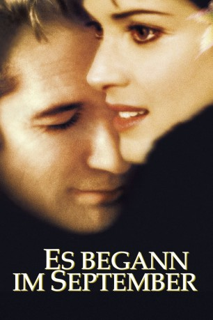

#9878 Es begann im September
Alternativ: Autumn in New York
 
 IMDB-Wertung: 5.6 / 10
IMDB-Wertung: 5.6 / 10  Metascore: 24
Metascore: 24 
Will Keane ist ein Mann, der alles hat, aber nicht zu geben bereit ist. Als Besitzer eines In-Restaurants liegt ihm die New Yorker High Society zu Füßen. Die Herzen der Frauen fliegen ihm zu, er aber ist zu keiner echten Beziehung fähig. Da lernt er Charlotte Fielding, die Tochter einer alten Freundin, kennen, und mit einem Mal ist alles anders. Charlotte will jedoch nur den Moment von ihm, nicht die Zukunft - denn sie ist sterbenskrank und hat nur noch kurze Zeit zu leben. Nun beginnt Will zu lieben und zu kämpfen - er will Charlotte nicht verlieren...
Jahr: 2000
Dauer: 99 Minuten
FSK: 6
Land: USA Studio: MGMTonspuren:
Untertitel:
Auflösung: 1080p (1920x1080) Größe: 5754 MB
Genre: Drama, Liebe
Regisseur: Joan Chen
Drehbuch: Allison Burnett
Soundtrack: Gabriel Yared
Darsteller:
 Richard Gere als Will Keane
Richard Gere als Will Keane Winona Ryder als Charlotte Fielding
Winona Ryder als Charlotte Fielding Anthony LaPaglia als John
Anthony LaPaglia als John Elaine Stritch als Dolly
Elaine Stritch als Dolly Vera Farmiga als Lisa Tyler
Vera Farmiga als Lisa Tyler Sherry Stringfield als Sarah
Sherry Stringfield als Sarah Jill Hennessy als Lynn McCale
Jill Hennessy als Lynn McCale J.K. Simmons als Dr. Tom Grandy
J.K. Simmons als Dr. Tom Grandy Sam Trammell als Simon
Sam Trammell als Simon Mary Beth Hurt als Dr. Sibley
Mary Beth Hurt als Dr. Sibley Kali Rocha als Shannon
Kali Rocha als Shannon- Toby Poser als Autumn Woman #1
- Audrey Quock als Eriko
 Tawny Cypress als Melissa
Tawny Cypress als Melissa- Laurent Schwaar als 458 Waiter
- Patrick Price als 458 Waiter
- Ted Koch als 458 Bartender
- Daniella Van Graas als Model at Bar
 Rachel Nichols als Model at Bar
Rachel Nichols als Model at Bar- Nik Pjeternikaj als 458 Customer
 Liza Lapira als Charlotte's Birthday Friend
Liza Lapira als Charlotte's Birthday Friend Bill Raymond als Michael (Doorman)
Bill Raymond als Michael (Doorman)- Kathleen Goldpaugh als St. Vincent's Nurse
- Lindsay Canton als Young Teacher at Museum (uncredited)
 Jamie Harrold als (uncredited)
Jamie Harrold als (uncredited)- Nami Paix als Birthday Friend (uncredited)
- Rohan Quine als The Moroccan (uncredited)
- Randy Troy als Package Boy (uncredited)
- Jade Viggiano als Good Fairy Witch (uncredited)
- Steven Randazzo als Alberto
- George Spielvogel III als Netto
- Ranjit Chowdhry als Fakir
- Gabriel Portuondo als 458 Waiter
- Alvin H. Einbender als 458 Bartender
- Steven Ravid als 458 Customer
- Ron Emanuel als 458 Customer
- Dan Camins als 458 Customer
- John Guidera als 458 Customer
- Russell Hunston als 458 Customer
- Paige Handler als Charlotte's Birthday Friend
- Sarah Teresa Burns als Little Girl at Playground
- Earl Carroll als Will's Driver
- David Filippi als Taxi Driver
- Becca Lee als Michelle
- Estelle Robinson als Old Frail Lady
- Brittney Bunkis als Little Girl at Museum
- Delores Mitchell als Librarian
- Hatsumi Yoshida als Clown at Halloween Party
- Kristi Lee Guinness als 50's Girl at Halloween Party
- Luca Waldman als Vampire at Halloween Party
Datei: X:\2000\Es begann im September (2000, FSK6, 1920x1080).mkv seit 08.11.2018
Festplatte: Gemischt-01+Anime
 Es gibt insgesamt 82 Filme in der Gruppe '2000'
Es gibt insgesamt 82 Filme in der Gruppe '2000'